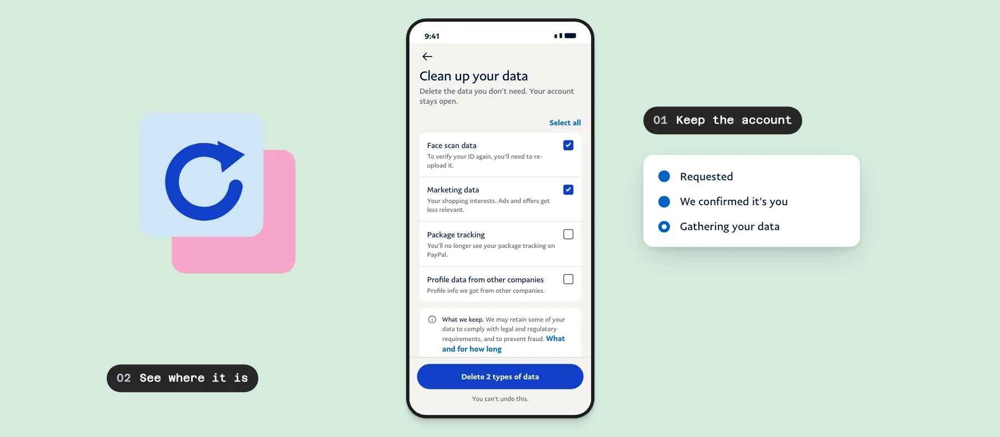

The composed cover, each case in its own colour, with two short notes instead of four. A: one screen, her illustration and one piece. B: two screens, a smaller illustration and line icons. Rendered from the real component.
